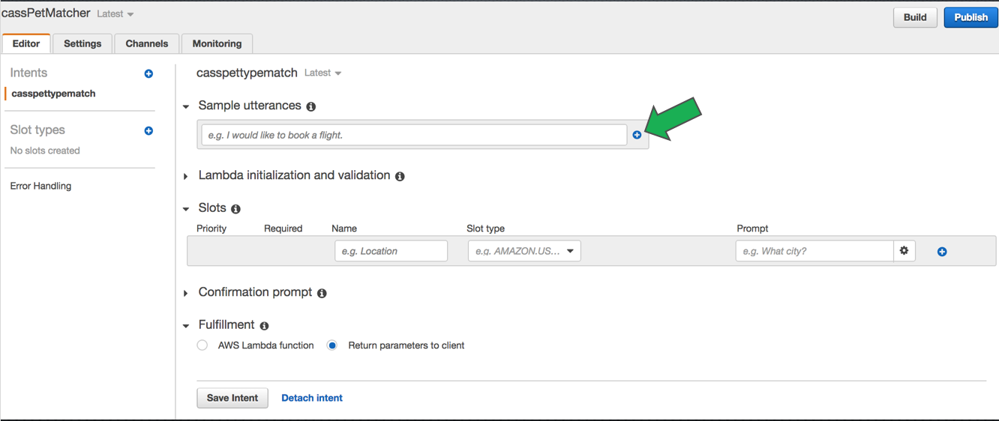
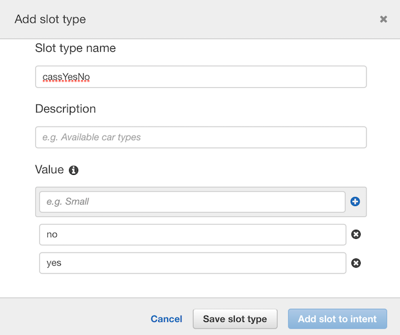
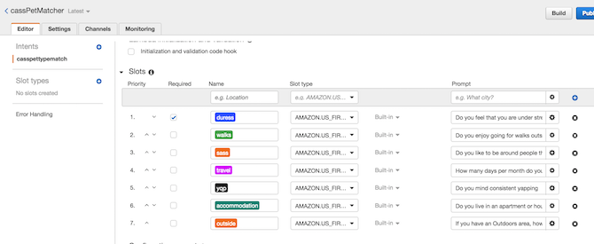
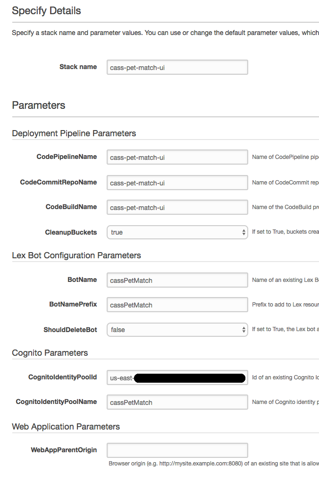
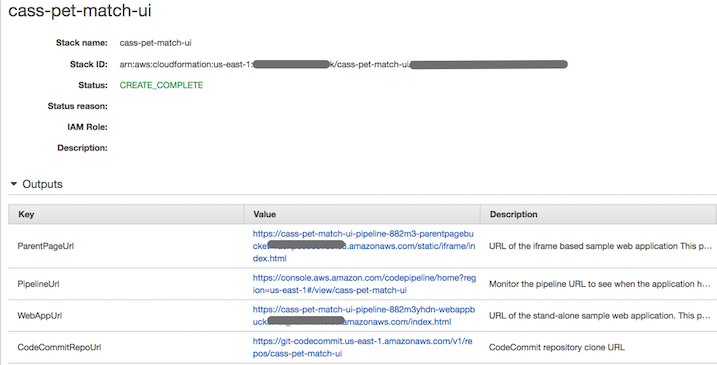
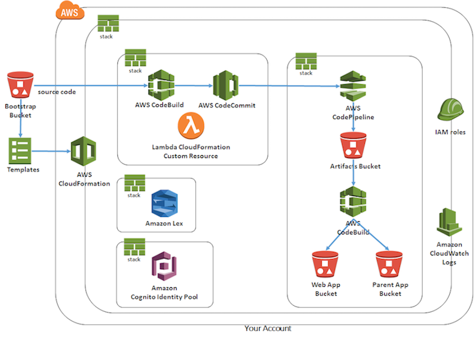
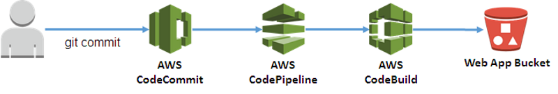
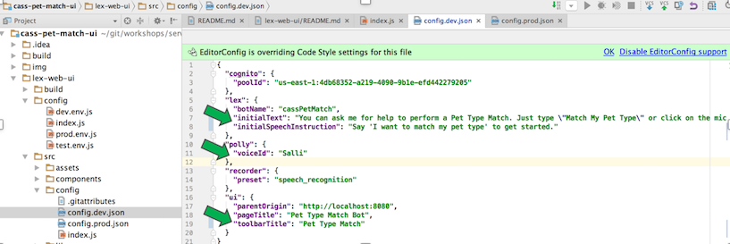
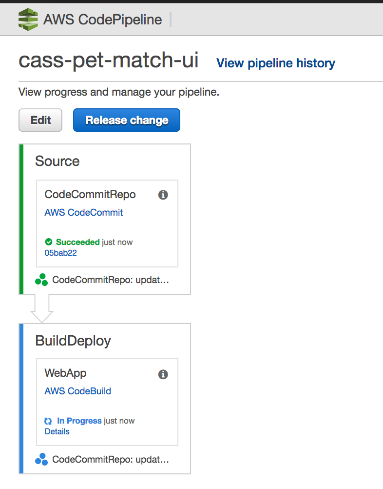

Serverless Chatbot on AWS
Amazon Lex | Amazon Polly |  Amazon S3 |  Amazon Cognito |  AWS IAM |
 Amazon Lex Overview
Create Amazon Lex Bot
AWS Lambda Fulfillment Function
awslabs & Cloudformation
Update Lex Bot Configuration
Amazon Lex Overview
Create Amazon Lex Bot
AWS Lambda Fulfillment Function
awslabs & Cloudformation
Update Lex Bot Configuration
Amazon Lex Overview
Navigate to the the 'Lex' Service in the AWS console. Lex is currently available in us-east-1 only so you will have to select that region. You'll see a 'Test Bot' at the bottom of the console - but this will not work until we've defined and buit the bot so let's get started. :) Select 'Create', and then 'Custom Bot' Use [yourid]PetTypeMatch for the Bot name and Select a voice of your liking. Select 'No' to the Child-Directed question, and then select Create. Select 'Create an intent', and then Select 'Create a new intent'. Call it [yourid]pettypematch, and then select 'Add'. In the Sample Utterances box, type 'Match My Pet Type'. Select the + icon to add the utterance as shown below or just hit return:  Repeat this process for the following phrases so that you have three utterances listed: Pet Match Pet Match for someone who travels {travel} days per month Match my pet for someone who lives in a {accommodation} I want to match my pet type Can you match my pet type Note the entries with brace {}. Those allow you to pass in the slot value as the user says the Utterance. We'll test these out in a bit. Skip over the 'Lambda Initialisation and validation', but be aware that you can invoke a Lambda function to initialize and validate as the slots are field. For example in our case we could invoke a Lambda function which get the list of questions or return the next question to ask, validating input,etc. We would only allow 'yes' or 'no' for many of the questions, and others are restricted to an enumeration. Further, in our particular match logic, whether or not you choose 'sass' is a major deciding point, so you could start to collect only the questions that are needed based on previous responses, and if we integrate with more of a rules engine long term that will be quite feasible. Select the (+) icon to the near the 'Slot Type' by in the left navigation. Fill in the details for a userIdYesNo slot type by first typing 'yes' into the box to the left of the + icon, and only after hitting the + icon or just hitting return. Repeat this for 'no' then say 'Save Slot Type'. Amazon Lex uses the enumeration values you provide in a slot type definition to train its machine learning models.  Add another slot type called [yourUserId]AccommodationType and the enumeration values: house, apartment and townhouse. Add one more slot type called [yourUserId]characterType and the enumeration values:character, complaisant. Add one more slot type called [yourUserId]Chatter and the enumeration values:talking, silence. For the Slots, we're going to replicate the questions we asked on our PetMatch website because those are the values that we need to collect to be able to perform a match, but we'll try to make them a little more conversational. Enter 'duress' for the Name, [yourId]YesNo for the SlotType and 'Do you feel stressed (yes/no)?' for the Prompt. Hit the + icon similar to how you added the Utterances. Please ensure ALL slots are required by selecting the 'Required' check box Repeat the same for all the questions as follows, leaving the slot name exactly as shown with no capitals: * Ensure that all of the Intents have the checkbox ticked. Name: walks Prompt Type: [yourId]YesNo Prompt: Do you enjoy taking walks outside (yes/no)? Name: sass Prompt Type: [yourId]Character Prompt: Do you prefer people with character, or you prefer someone complaisant? Name: travel Prompt Type: AMAZON.NUMBER Prompt: How many days per month do you travel? Name: yap Prompt Type: [yourId]Chatter Prompt: Do you enjoy talking or prefer silence? Name: accommodation Prompt Type: [yourI]AccommotationType Prompt: Do you live in an apartment,house or townhouse? Name: outside Prompt Type: AMAZON.NUMBER Prompt: If you have an outdoor area, how large is it in sq m? Say 0 if you do not have one It should look like this afterwords (except all should be required fields):  Skip the confirmation prompt as the result of the pet match is not something that needs confirmed, and ensure the 'Fulfillment' is expanded. We are going to call our Lambda function to invoke and poll the Step Function - but Amazon Lex requires a specific response from Lambda so we will write a wrapper Lambda around our Polling Lambda.
Create Amazon Lex Chatbot
Navigate to Lambda in the Console, and select 'Create a Lambda function' Select 'Blank Function' and skip the Trigger by hitting Next again. Name the Lambda function [yourid]invokeLambdaSM. Not that this is a type of utility function that can be genericised and re-used by all. However with the permissions setup for this lab to avoid accidental overwrite, you won't have permissions to do that. Paste the following into the body of your function. 'use strict'; var aws = require('aws-sdk'); var lambda = new aws.Lambda({ region : process.env.TARGET_REGION }); // --------------- Helpers to build responses which match the structure of the necessary dialog actions ----------------------- function elicitSlot(sessionAttributes, intentName, slots, slotToElicit, message) { return { sessionAttributes, dialogAction: { type: 'ElicitSlot', intentName, slots, slotToElicit, message, }, }; } function close(sessionAttributes, fulfillmentState, message) { return { sessionAttributes, dialogAction: { type: 'Close', fulfillmentState, message, }, }; } function delegate(sessionAttributes, slots) { return { sessionAttributes, dialogAction: { type: 'Delegate', slots, }, }; } function buildValidationResult(isValid, violatedSlot, messageContent) { if (messageContent === null) { return { isValid, violatedSlot, }; } return { isValid, violatedSlot, message: { contentType: 'PlainText', content: messageContent }, }; } function handlePetMatch(intentRequest, callback,context) { // invoke our Lambda function to give us the resutMatch var slotValues = intentRequest.currentIntent.slots; console.log("in handlePetMatch: " + JSON.stringify(slotValues)); // map our conversational response to the expected model by our step function. if(slotValues.sass && ((slotValues.sass.toLowerCase().indexOf("sass") > -1) || (slotValues.sass.toLowerCase().indexOf("character") > -1))) { slotValues.sass = 'yes' } else { slotValues.sass = 'no' } if(slotValues.yap && ((slotValues.yap.toLowerCase().indexOf("yap") > -1) || (slotValues.yap.toLowerCase().indexOf("talk") > -1))) { slotValues.yap = 'yes' } else { slotValues.yap = 'no' } console.log("after transformation: " + JSON.stringify(slotValues)); var params = { FunctionName: process.env.FUNCTION_ARN, Payload: JSON.stringify(slotValues, null, 2) }; console.log("params: "+ params); lambda.invoke(params, function(error, data) { if (error) { console.log("error occurred: " + error); context.done('error', error); } if(data){ var json = JSON.parse(data.Payload) console.log("data: " + json); var response = "Your Pet Match is a " + json.petTypeId + " of breed " + json.breed + ". The pet is classified as a " + json.Classification + " and the average life expectancy is " + json.lifespan; // Send the response back to ex callback(close(intentRequest.sessionAttributes, 'Fulfilled', { contentType: 'PlainText', content: response })); } }); } // --------------- Intents ----------------------- /** * Called when the user specifies an intent for this skill. */ function dispatch(intentRequest, callback, context) { console.log(`dispatch userId=${intentRequest.userId}, intentName=${intentRequest.currentIntent.name}`); console.log("intentRequest: " + JSON.stringify(intentRequest)); const intentName = intentRequest.currentIntent.name; // Dispatch to your skill's intent handlers if (intentName === process.env.INTENT_NAME) { return handlePetMatch(intentRequest, callback); } throw new Error(`Intent with name ${intentName} not supported`); } // --------------- Main handler ----------------------- // Route the incoming request based on intent. // The JSON body of the request is provided in the event slot. exports.handler = (event, context, callback) => { try { // By default, treat the user request as coming from the America/New_York time zone. process.env.TZ = 'America/New_York'; console.log(`event.bot.name=${event.bot.name}`); console.log('event=' + JSON.stringify(event)); if (event.bot.name !== process.env.BOT_NAME) { callback('Invalid Bot Name: ' + event.bot.name); } dispatch(event, (response) => callback(null, response), context) } catch (err) { callback(err); } };DEFINE four Environment Variables (below the function) substituting the appropriate region name and your function name. Note that ap-southeast-2 is Sydney, but you can search for any region here: TARGET_REGION=ap-southeast-2 FUNCTION_ARN=[yourid]InvokeStateMachineWithResults BOT_NAME=[userid]PetTypeMatch INTENT_NAME=[userId]pettypematch In the advanced section, increase the timeout to 30 seconds. For the role, select [userId]LambdaInvokeLambda Once your function is complete - navigate back to Lex and select your new Function (NB: YOU will Likely need to navigate away from the Lex screen and re-enter the Intent to see the InvokeSM Function) for the 'Fulfillment' and then select 'OK' to the popup and then scroll down and select 'Save Invent' Select 'Build' from the top of the page to the left of the 'Publish' button. Once the build is complete (this can take a short while), the bot is ready to be tested, but before we do that let's kick off a CloudFormation template that will take some time to build and then we will come back and test our bot.
AWS Lambda Fulfillment Function
awslabs & Cloudformation.
Now Before we test this all, we're going to "bootstrap" our efforts by using a lab off awslabs on github. It will take some time to build so we'll kick this off and then come back and test our bot. Navigate to this url in your browser in a new tab: Have a quick read of the architecture and then navigate to the section called 'Lauching'. Select the 'Launch Stack' Icon and which will take you to CloudFormation in the AWS Console. Ensure you are in the us-east-1 region. Copy the link where it says 'Specify an Amazon S3 template URL or click https://s3.amazonaws.com/aws-bigdata-blog/artifacts/aws-lex-web-ui/artifacts/templates/master.yamlEnter that url into another browser tab and have a quick look at the CloudFormation template that creates the lab and try to understand and find the Services that will be launched. Go back to the CloudFormation tab in your browser and click the Next button and be sure to . Put your unique userId of your work login in front of the existing name so it looks something like this: [userid]-lex-web-ui
Similarly with EVERY parameter - preface it with your unique id. This will make it much easier to find your resources if we are all working in the same AWS account.For the BotName - don't use the default value - change it to the name of your bot. For the Cognito Identity Pool - don't use the default value - change it to the name of your Cognito Identity Pool. Your final CloudFormation Parameters screen should look something like the following - except use your unique Id instead of 'cass'  Hit Next until the last page and select the 'I acknowledge that AWS CloudFormation might create IAM resources with custom names.' and click 'Create' This will take some time to build but in the meantime we have a few things to complete: Read through the rest of the awslabs aws-lex-web-ui
If you haven't already, test your Lex bot via the console. (Instructions below)
Since you are using our own Cognito Identity Pool, you will need to add a policy to the role. (Instructions below)
-
Navigate to the Lex console and expand the bot. Enter 'PetMatch' into the chatbot and it should identify your intent, or responds with a Clarification Prompt if it can not identify any intent. You can see the Clarification Prompt text, which is configurable on the Error Handling section of your bot. Your bot should collect all required values and then invoke our Lambda function for Fulfilment, returning a summary of your match. Navigate to IAM and select 'Roles' Search for your Cognito Role Select the role and then 'Create Role Policy': 
For the Policy Name, use [yourUserId]LexPostPollySynth In the policy editor, copy the following policy and paste, substituting the [] and XXXX variables with the actual values with your region (e.g. us-east-1), your AWS account number, and your bot name respectively: { "Version": "2012-10-17", "Statement": [ { "Action": [ "lex:PostText", "lex:PostContent" ], "Resource": [ "arn:aws:lex:[your region]:XXXXXXXX:bot:[yourBotName]:*" ], "Effect": "Allow" }, { "Action": [ "polly:SynthesizeSpeech" ], "Resource": "*", "Effect": "Allow" } ] }There are two statements in this policy. This first allows a specific resource (your bot) to invoke the Lex PostText and PostContent APIs which are required for your bot to function appropriately. The second gives all resources the ability to call polly:SynthesizeSpeech to allow us to use Polly to synthesize our Speech and provide voice.Save the policy - you should now have three policies in total on your Cognito Unauth Role. Confirm that the CloudFormation stack status is 'CREATE_COMPLETE' and if not wait until it is. Expand the 'Outputs' Arrow and you should see something like this:  Copy the URL for the Ouptut Labelled 'WebAppUrl' - and open this in a new tab. You will see a page which exposes an Amazon Lex Bot, but talks of Flowers. Actually though, if you specified your Bot in the CloudFormation template, then the Bot behind the webapp is actually your bot (if you ignore the comments about Ordering Flowers :)). Enter one of your utterances and execute your Bot in Full via the webapp. Ok, that's all well and good but we want it to be tailored to our Bot so that we can incorporate it into our bot. So, we want to modify our Bot so we can embed it in our website and make it relevant for our application. Fortunately, the AWS Proserve Consultants who wrote the aws-lex-web-ui, have provided a slick way to accommodate this requirement. You will recall that there were four (4) outputs in our CloudFormation Stack. Scroll up and look at the image above again and you will see that there is one for a CodeCommitURL and another for a PipelineUrl. In fact the project uses three key AWS Services to provide an OOTB Pipeline to allow you to modify, commit and deploy your ChatBot Webapp as depicted in their diagram:  AWS CodeBuild is a fully managed build service in the cloud. AWS CodeBuild compiles your source code, runs unit tests, and produces artifacts that are ready to deploy. AWS CodeBuild eliminates the need to provision, manage, and scale your own build servers. It provides prepackaged build environments for the most popular programming languages and build tools such as Apache Maven, Gradle, and more. You can also customize build environments in AWS CodeBuild to use your own build tools. AWS CodeBuild scales automatically to meet peak build requests. AWS CodeCommit is a fully-managed source control service that makes it easy for companies to host secure and highly scalable private Git repositories. CodeCommit eliminates the need to operate your own source control system or worry about scaling its infrastructure. You can use CodeCommit to securely store anything from source code to binaries, and it works seamlessly with your existing Git tools. AWS CodePipeline is a continuous delivery service that enables you to model, visualize, and automate the steps required to release your software. And the specific Deployment Pipeline for this Project looks like this: You can read more about the pipeline at the aws-lex-web-ui awslabs, but our next step will be to Setup for AWS CodeCommit. This Lab assumes that you will want to setup for connectivity from an IDE, but please utilize the link above for alternative setup and revert to the AWS Instructions should you hit any issues.. Navigate to IAM in the AWS Console, as we are going to setup your userId to be able to access the AWS CodeCommit Repository. NB Feel free to utilize any alternative approach as desired. Select 'Users' and then select your AWS UserId. (NB: Another approach is to add this to the adminForUsername group too allow for all AWS participants but I will leave that to you) On the 'Permissions' tab, choose 'Add Permissions'. In 'Grant permissions', choose Attach existing policies directly. Select/Filter for AWSCodeCommitFullAccess from the list of policies and select the checkbox to include this policy. Remove the AWSCodeCommit... filter if you specified it and search for 'IAMSelf'.. and then select/tick 'IAMSelfManageServiceSpecificCredentials'. And finally search for 'IAMReadOnlyAcces' and tick the checkbox to include this policy, and then select 'Next: Review'. NB for more information about managed policies for AWS CodeCommit, see Managed Policies for AWS CodeCommit. Select 'Add Permissions' and you should see the three policies above have been added to your user (or Group depending upon your approach). Navigate to the 'Security credentials' tab for your userId, and scroll to the bottom. Under the area 'HTTPS Git credentials for AWS CodeCommit', select 'Generate', and then take note of the username and password and optionally Download the Credentials File. You will need these credentials to connect to AWS CodeCommit from your IDEA or other HTTPS-based connectivity. Navigate to your Favourite IDE, and checkout source code from Git. THere are many IDEs and techniques here so I won't provide too much detail as it is also subject to change. However for one example, if you utilize IntelliJ, Create a 'New' Project from 'Version Control' and select Git. For the Url, enter the CodeCommit URL from your CloudFormation Stack, where a fork of the aws-lex-web-ui repository was created. For the Username and Password credentials, enter the details you generated from within AWS IAM Security Credentials that you noted. You will now have a clone of the git fork that was created for your CodeCommit, so you can make changes and upon commit this will integrate to CodeBuild and your Pipeline and be deployed to your S3 bucket. At this point we should be setup to make and commit changes to our AWS CodeCommit repo which in turn will initiate our build pipeline and deploy our updates resources. But wait a minute, what do we need to change? Well, most likely not too much - perhaps the Title, Introduction Text, and colour of the webapp ChatBot. And lo and behold, take a moment to appreciate the good work of the ProServe Consultants once again because these minor modifications are actually a means of configuration. Further modifications are also fairly easy by modifying the source code. In your IDE or favourite editor, open the file lex-web-ui/src/config/config.dev.json. You should see that some of the values already reflect the input into your CloudFormation template such as the poolId, botName and 'ParentOrigin' (if you defined this). Edit the config.dev.json, and change the values of invalid fields such as the: * initialText * initialSpeechInstruction * polly.voiceId (if you want a voice other than Salli - see AWS Polly for the voice options) * pageTitle * toolbarTitle This diagram tries to highlight the field you might want to modify:  For our purposes, make THE SAME changes to lex-web-ui/src/config/config.prod.json. This will allow us to quickly test the changes since we have not yet incorporated the bot to our local webapp. If you want to change the colour of the Bot (from red to something else), then we have one more field to modify, which is index.js within the same directory as config.dev.json. Search for 'toolbarColour (mispelled as toolbarColor of course - the yanks! ;), and replace the value 'red' with whatever html colour you desire. You may note that some of the values you updated in config.dev.json are in this file but don't worry your config.dev.json files will be updated). Once modified, commit the two files, and you should find that your build pipeline is kicked off and your bot at the webapp is updated. Be sure to push the files to complete the update. You can follow your build pipeline most readily by navigating to AWS CodePipeline and selecting your pipeline (e.g. [yourUserId]-pet-match-ui). In the diagram below you will see that the BuildDeploy is still inprogress- but once this completes it will turn green and say 'Succeeded' rather than 'In Progress'. Once that is complete - navigate back to the webapp URL from your CloudFormation Stack and you should see that not only is your Lex Bot still the engine, but it should have the additional configurations.  Ok great, it's looking like the bot I'd like to display in PetMatch (or other website), but how do I integrate this back into my webapp? In the previous section, we configured our Amazon Lex Bot to appear as desired but we now need to incorporate our bot into our webapp. Fortunately once again, our good friends from AWS ProServe have made this fairly easy by allowing us to include our server-side bot as an iframe. You may recall that from the CloudFormaton 'Outputs' tab there was a fourth output that we have not yet explored. It was appropriately labelled 'ParentPageUrl'. Feel free to navigate to this URL for two (2) reasons: 1) If you explore its implementation, you will see that it is a good example for how to embed an Amazon Lex Bot as an Iframe. 2) The parent page provides additonal details about he Bot invocation that you do not (currently) get from the AWS Console. As such it *might* be useful for you to use for testing your Amazon Lex Bot, at least for a limited period. Once you have explored the parent page URL (if interested), let's apply a similiar approach and incorporate our Bot into our existing webapp. Analyzing the parent bot or by following the instructions at the 'lex-web-ui/static/iframe/README.md', you should be able to incorporate your server-side Bot most readily I will duplicate the instructions here, but please see your local README.md for the latest instructions as the may change over time. Copy all the files from 'lex-web-ui/static/iframe/' to a directory of your choice in your local aws-serverless-workshop build. The recommended directory is aws-serverless-workshop/static/iframe as that will require the fewest changes but any directory is acceptable so long as you modify the relevant paths in future steps Now we need to add the following includes into our index.html in the base of aws-serverless-workshop - WITH appropriate modifictatons: <link rel="stylesheet" type="text/css" href=[INSERT-PATH-TO]/static/iframe/bot.css"> <script src="[INSERT-PATH-TO]/static/iframe/bot-loader.js">Modify the index.html to point to the appropriate relative paths based on where you placed the files.Edit the config.json which should be located in parallel to the files you copied in from the 'lex-web-ui/static/iframe' directory. The cognitoPoolId and region should be set appropriately, but correct them if not. You can leave the 'iframeOrigin' as it is to 'localhost' and test locally, or modify it to your webappurl (from CloudFormation outputs) to test it in full. Once you've reloaded
https://github.com/awslabs/aws-lex-web-ui